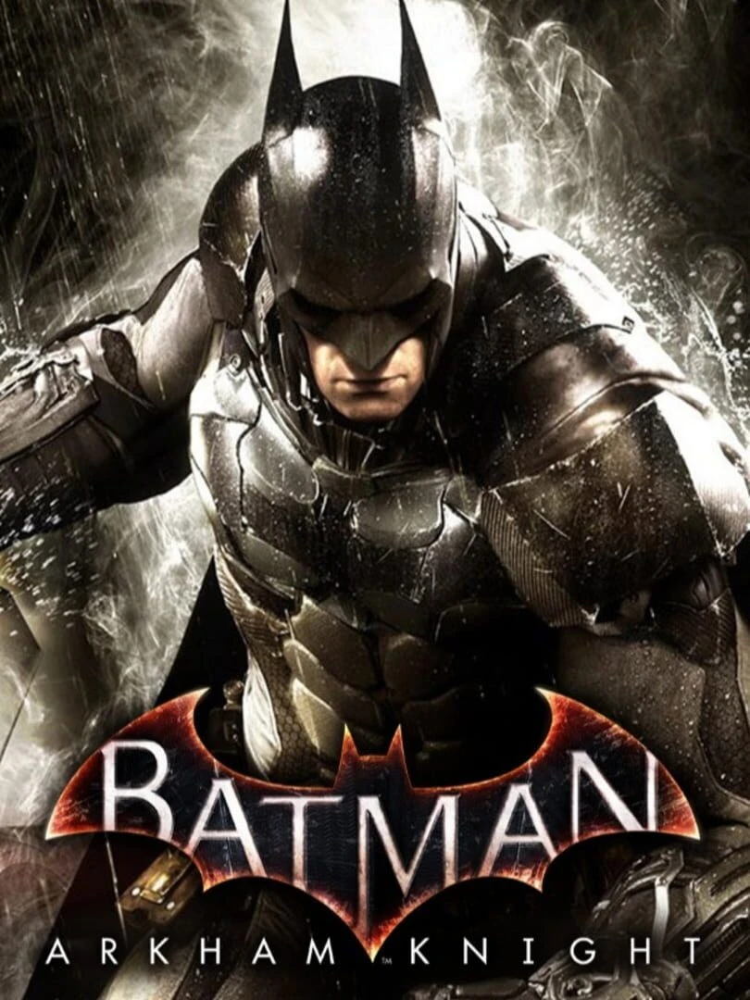

Estudio: Rocksteady Studios · Nota Metacritic: 87/100

Cierre de la trilogía de Rocksteady. En la noche más larga de Gotham, el Espantapájaros (Scarecrow) une a los villanos de la ciudad con un plan para llenarla de su gas del miedo y revelar la identidad de Batman al mundo. Pero el verdadero enemigo es el Caballero de Arkham, un soldado con armadura militar que conoce todos los secretos y tácticas de Batman.
El juego introduce el Batmóvil pilotable (con modo tanque y modo persecución), un Gotham cinco veces más grande que Arkham City y el final de la historia de Bruce Wayne en esta continuidad. Su DLC principal, Batgirl: A Matter of Family, es una precuela jugable con Bárbara Gordon.
«¿Por qué caemos, Bruce? Para aprender a levantarnos.»
— Thomas Wayne en Batman Begins (2005). Una frase que encaja con Arkham Knight, el juego en el que Batman lo pierde casi todo.
© 2026 David Cabrera González · Proyecto de Lenguajes de Marcas